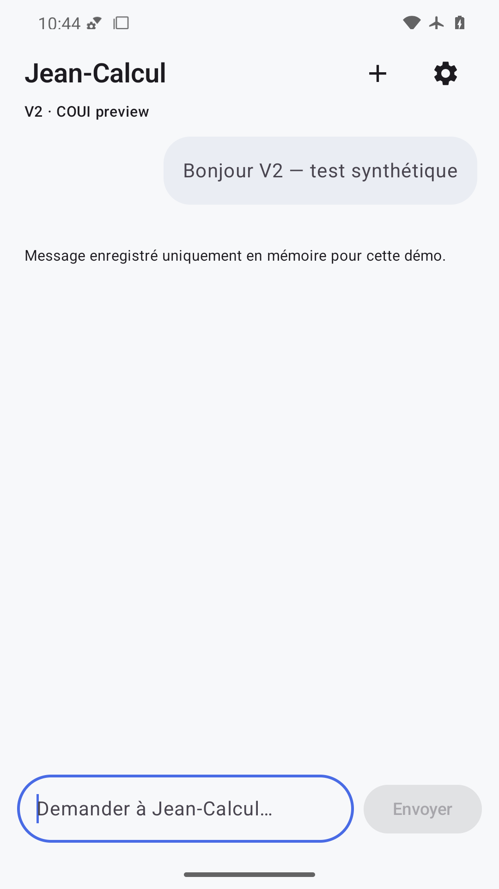
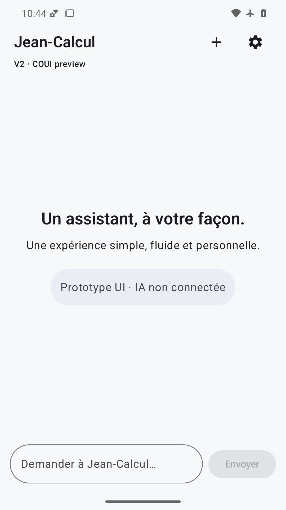
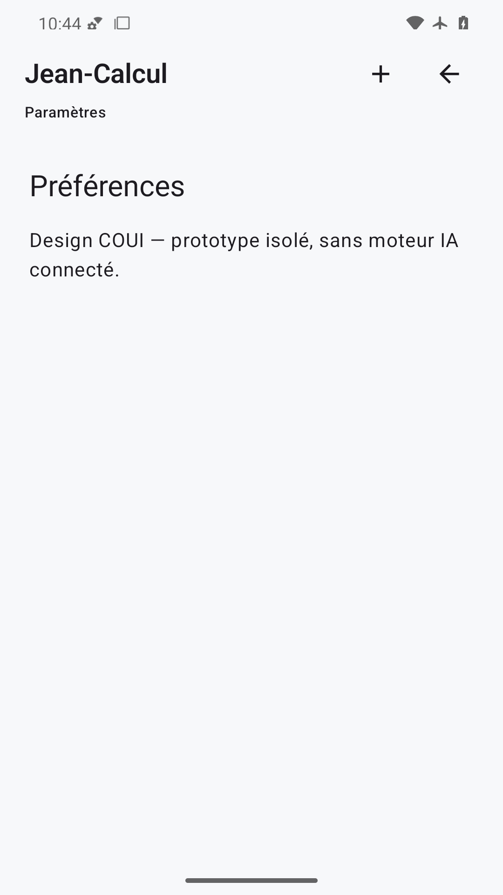
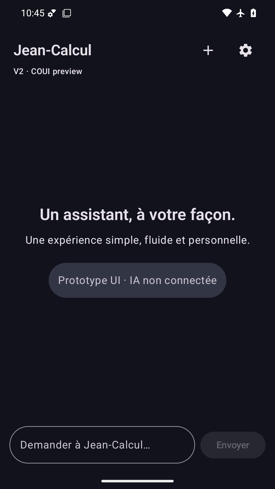
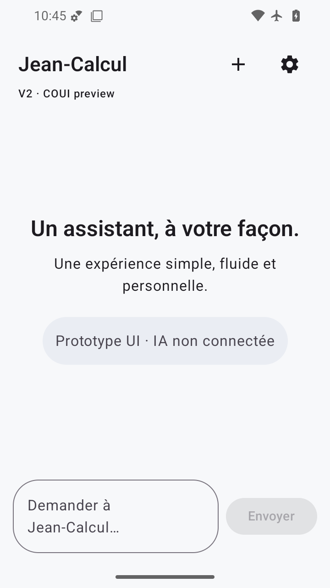
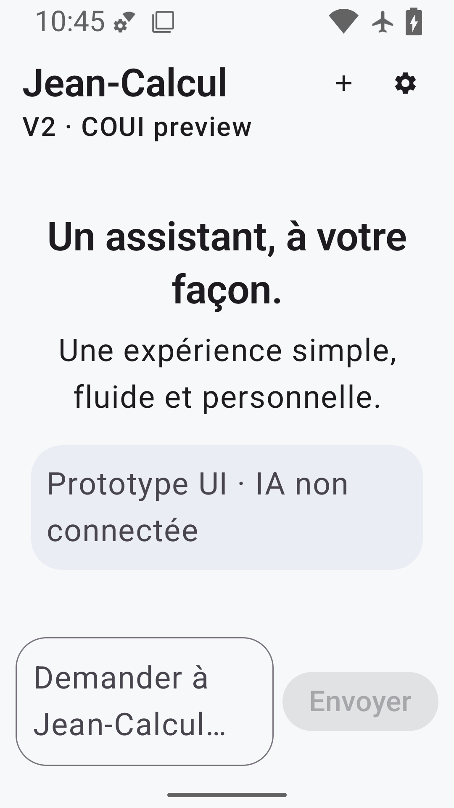
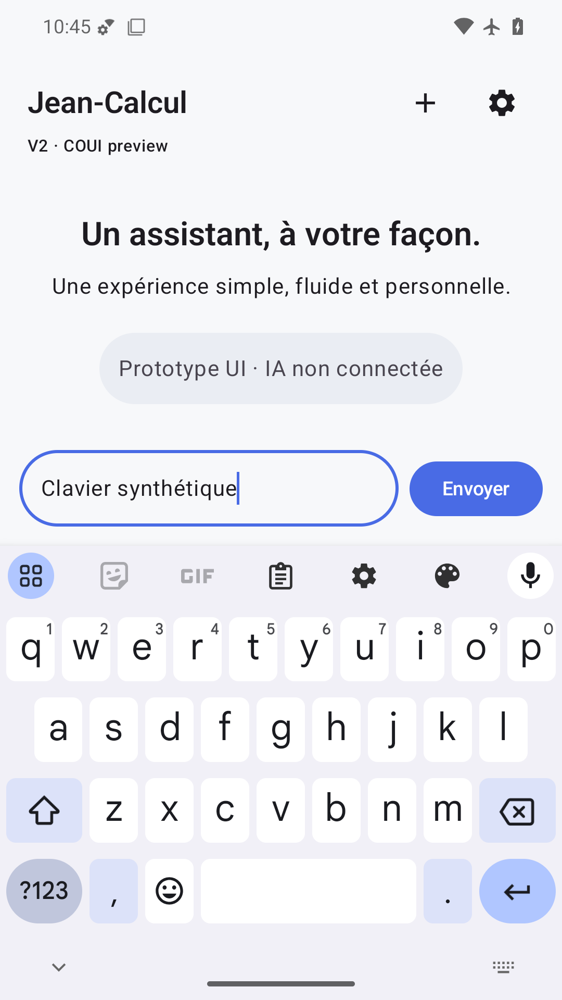
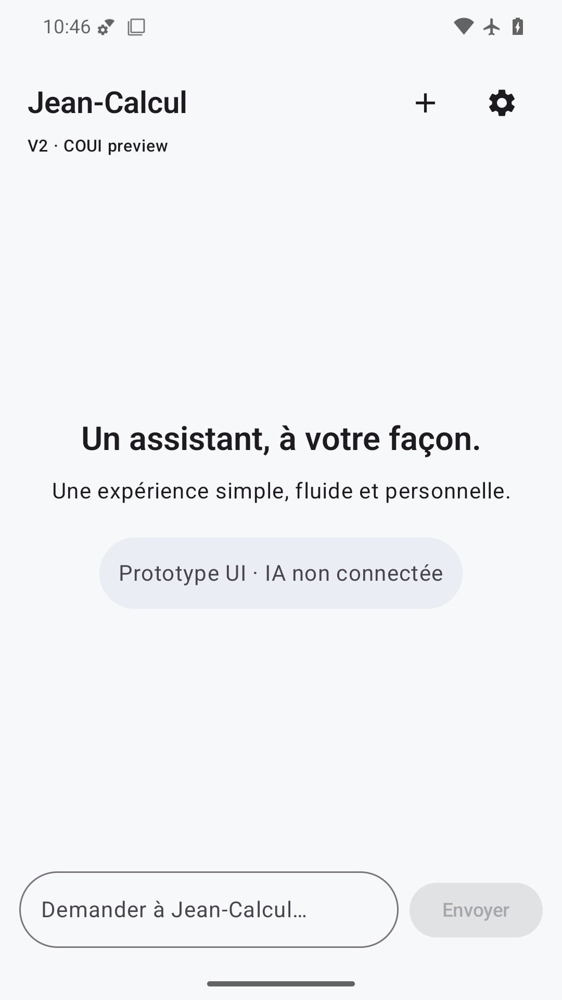
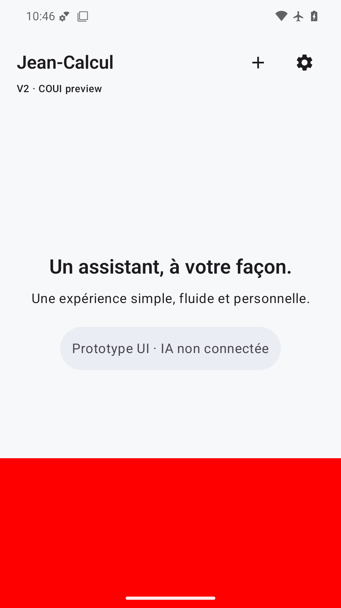

Capture finale ouverte : titre/actions compacts, accueil et avertissement complets, champ de saisie au-dessus du geste système ; barre de statut lisible en clair.

Bulle Bonjour V2 et avertissement mémoire visibles ; champ vidé après envoi. Aucun chevauchement des contrôles ou barres système.

Accueil restauré, bulle synthétique absente et champ vide ; PNG complet, mention prototype entièrement lisible.

Préférences et mention sans moteur IA visibles, retour au chat identifiable. Le retour système a également passé le test connecté.

Fond sombre cohérent, texte et actions clairs lisibles ; surface de saisie et geste système bien séparés.

À 360×640 dp, navigation, texte d’accueil, avertissement et saisie restent dans la fenêtre. Placeholder sur deux lignes sans texte coupé.

À 200 %, Jean-Calcul et le sous-titre restent lisibles ; avertissement IA non connectée entièrement affiché sur deux lignes. Envoi et saisie ne débordent pas.

Clavier Android visible, texte synthétique et bouton Envoyer actif au-dessus de l’IME. Le contenu reste lisible sans chevauchement du clavier.

Capture stable et complète, thème clair lisible et insets corrects avec animations système à zéro. Fluidité et haptique physiques non déduites de cette image.

FAIL volontaire détecté dans cette nouvelle capture : rectangle rouge plein masquant toute la saisie et le bouton Envoyer. Aucun défaut analogue sur les neuf états normaux.